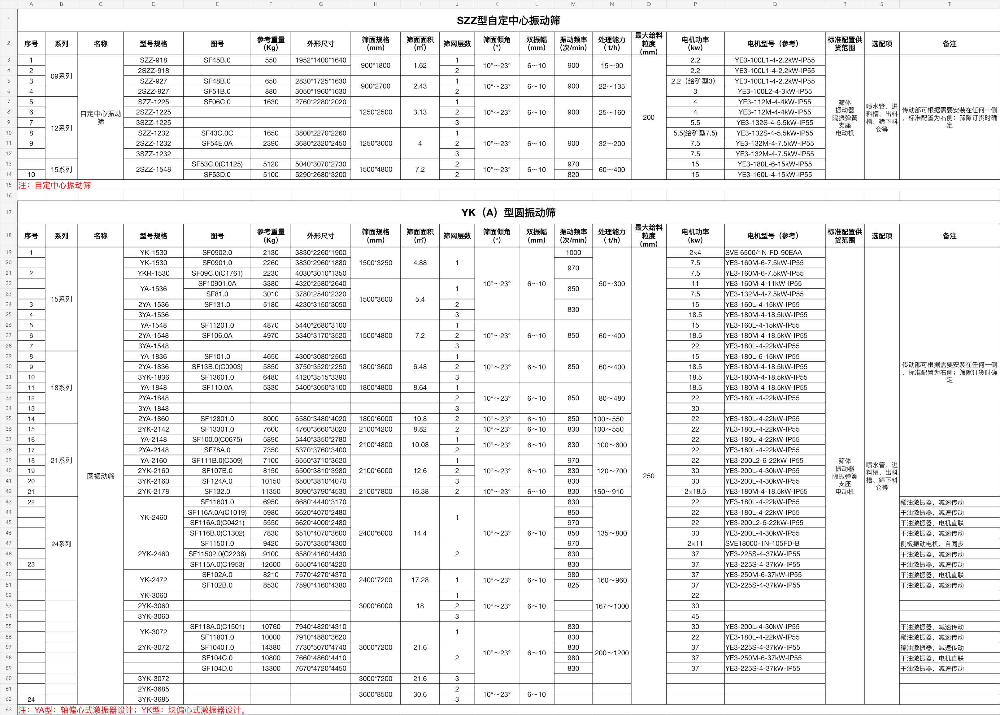
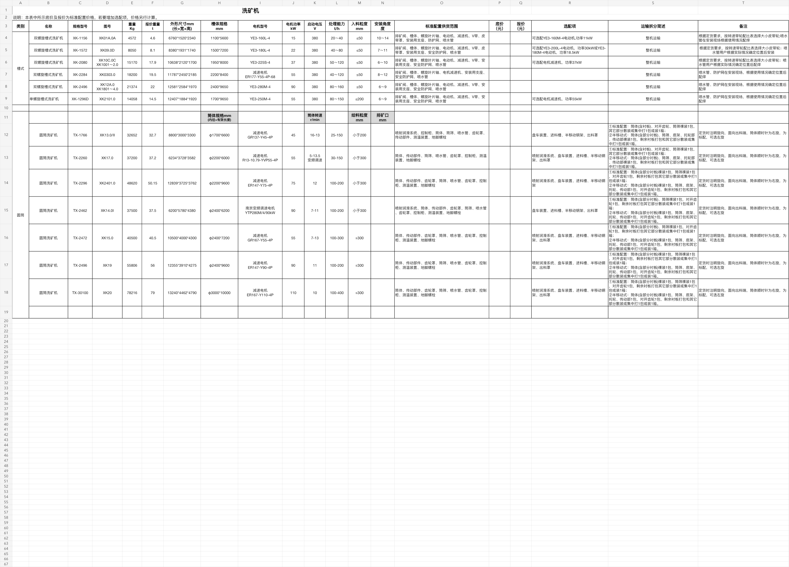
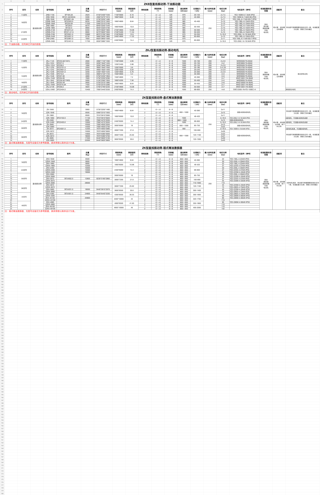
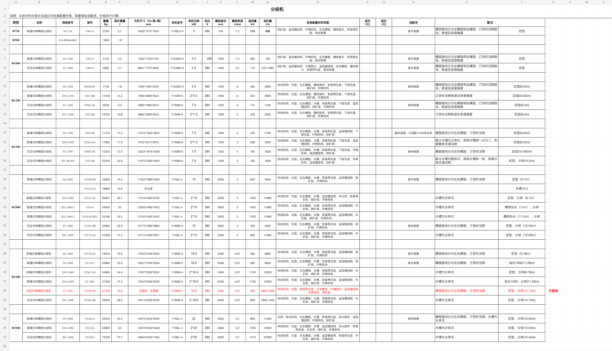

Structure
结构只维护一次
Hero、图文、Gallery、指标、产品卡片等白名单区块共享排序与布局，避免四套页面漂移。
独立 Sales Platform 完成企业展示、客户问诊、候选工艺、逐段多设备选择和初步打印；由获得专用权限的人员审核后可现场交付，完整记录再回传工艺工程师优化并形成正式方案。
推荐使用 Sales Platform 内置的结构化 CMS：一份页面结构、四套独立译文、一个可复用媒体库，以及可审核/回滚的不可变 ContentRelease。
Hero、图文、Gallery、指标、产品卡片等白名单区块共享排序与布局，避免四套页面漂移。
源文字变化只把相关译文标成 STALE；LLM 可起草，中文/英文/俄文/乌克兰文分别审核。
对象存储保存原图，多尺寸自动生成；记录焦点、版权、客户授权和到期时间，含文字图片可按语言覆盖。
整包 checksum/ETag 更新，失败继续上一版；历史客户会谈固定当时 release，不被后来改图改字影响。
| 变更类型 | 维护入口 | 是否重新发布 Electron | 发布门禁 |
|---|---|---|---|
| 修改介绍文字、翻译、按钮 | 内容管理中心 | 不需要 | 目标语言审核 + 预览 |
| 更换图片、排序、裁切焦点 | 媒体库 / 区块编辑器 | 不需要 | 媒体扫描、权利、variant、alt text |
| 增加已有模板的页面/区块 | 页面树 / 区块编辑器 | 不需要 | 结构 + 四语言 + 客户安全 |
| 新增一种渲染组件或桌面能力 | 前端代码仓库 | 需要 | 代码测试、签名、Windows/macOS 发布 |
同一个客户会谈里完成介绍、问诊、推荐、设备选择和初步打印；工程师收到的是完整结构化记录，不是一张失去上下文的 PDF。
只显示已发布、customer-safe 的内容；隐藏内部评分、规则、成本和其他客户。
保存客户原话、原单位、未知/估计和证据，再映射到标准需求字段。
每个工艺段 1–N 个备选；销售切换型号和数量时实时重新校核。
审核资格来自专用权限，不来自岗位名称；初步件交付后，工程师再深化正式方案。
算法原稿、销售现场方案、工程工作副本、正式发布互不覆盖。
固定输入、规则、设备目录、案例库和算法版本。只追加，不因后续编辑变化。
逐段比较多个设备，调整型号和数量；可打印带免责声明的初步方案。
工程师可增删节点、调整物流、替换设备、写说明；所有偏离和覆盖理由留痕。
从批准修订冻结 manifest，统一生成客户用 PDF/DOCX；JSON 仅作为内部数据契约，不作为打印交付物。
平台不属于 BMS 或 CRM，也不要求关联既有销售项目。客户/工程工作台在独立 Sales Platform；BMS 通过 BFF 展示管理投影和执行已授权动作，不复制领域数据。平台后端最终部署位置仍待确认。
员工在 BMS 完成内容、翻译、数据维护、审核与发布、项目/工程记录和权限管理；所有领域事实仍由 Sales Platform Admin API 和 121 独立 schema 管理。
待办、质量、过期、发布和失败任务。
页面、图片、四语言、预览和 ContentRelease。
设备、案例、规则、字典、来源和质量。
按权限聚合待办；预览、批准、排期和回滚。
项目/推荐只读、工程交接和方案状态；审计证据进入详情历史。
页面、按钮、人员/角色和数据范围映射。
/permission/getUserPromissions 动态生成菜单和路由；页面组件放在 src/views/...，禁止写入 src/store/modules/routes.ts、src/router/index.ts 或新增 legacy inject*。按钮能力配置为“权限”子项并精确匹配 functionCode。| 展示层 | 给谁看 | 展示内容 | 为什么这样做 |
|---|---|---|---|
| 默认摘要 | 所有获得页面权限的人 | 状态、版本、Owner、质量、新鲜度、更新时间、待办 | 快速完成工作，不让 83 张表变成一张巨型表格 |
| 结构化详情 | 获得资源范围权限的人 | 当前数据、版本、翻译/媒体、来源、影响、审核、审计 | 完整可追溯，但按业务语义组织 |
| 高级原始视图 | 数据维护人/专家/审计 | 原始 JSON、导入行、checksum、reason code、技术日志摘要 | 满足排错和证据需要，复制/导出需额外授权 |
| 禁止展示 | 任何普通页面 | 密码、JWT、API Key、数据库凭据、未授权客户资料、模型密钥 | “可查看全部业务事实”不等于泄露秘密 |
三份真实文件已经证明：一个 Sheet 可以重复表头、切换列语义；一个工作簿也可以混入另一类产品。系统必须先拆 logical regions，再映射、标准化、比对和审核。
| 文件 | 真实结构 | 关键风险 | 导入策略 |
|---|---|---|---|
| 圆振动筛 | 1 Sheet / 2 regions / 45 型号行 | 同型号多图号；11 行空型号但有图号；合并单元格继承 | 型号 + 图号/配置 fingerprint；空型号进入继承复核 |
| 洗矿机 | 1 Sheet / 槽式 + 圆筒两套字段语义 | 同一列中途从启动电压变成筒体转速；参考重量与报价重量并存 | 按分类行拆 region；每个 region 独立 Mapping Profile |
| 直线筛文件 | 2 Sheet / 5 regions / 92 型号行 | 第二 Sheet 是分级机；四次重复表头；区间被 Excel 当日期 | 不能相信文件名；同时读取 raw、显示文本和 number format |




表头指纹命中已审核 Mapping Profile；自动拆区和标准化，仍显示 diff 并审核。
确定性规则先识别；LLM 只建议产品类型、表头和长文本映射，不自动发布。
用户手工选择区域、表头、产品类型、字段和单位；确认后可形成新 Profile。
| 结果页状态 | 判定含义 | 页面展示 | 是否可批量处理 |
|---|---|---|---|
| NEW_MODEL | 数据库无匹配商业型号 | 新型号、来源、映射和全部字段 | 低风险且字段完整时可提交审核 |
| NEW_VARIANT | 型号存在，图号/配置尚不存在 | 现有型号 vs 新图号/配置 fingerprint | 需确认同型号多图号语义 |
| UPDATE | 身份匹配，标准化业务字段变化 | 字段 old / proposed / 原文 / 单元格 | 关键工程字段默认逐项审核 |
| FORMAT_ONLY | 原文变化但标准语义相同 | 格式差异与来源更新 | 可以跳过正式版本发布 |
| CONFLICT | 多来源或解析结果无法确定 | 并排来源、规则、置信度和问题 | 禁止批量发布 |
| INCOMPLETE | 缺身份、单位或必要工程事实 | 缺失原因和原表位置 | 只能留在 staging |
customer.handout.review 决定谁能审核初步交付件；不绑定组长、负责人或任何岗位称谓。
zh-CN / en / ru / uk 独立生成和留痕；俄语与乌克兰语不是同一份翻译。
数据库持久化 UTC，项目与会谈记录 IANA 时区；界面和文件显示本地时间与 UTC 偏移。
仅用于抽取、映射、翻译/说明草稿与候选建议；工程事实、设备定型和发布门禁仍由确定性流程控制。
高频可计算字段强类型化；长尾工艺参数才进 JSON。规范化写模型与算法快照分开。
| 表前缀 | 主要内容 | 关键约束 |
|---|---|---|
| sales_* | 结构化页面、四语言翻译、媒体、ContentRelease、问卷、会谈、销售修订和打印 | 内容整包发布；算法/销售/工程/正式四层隔离 |
| project_* | 平台内部 Project、需求版本、矿石、场地、道路、输入快照 | 无需外部销售项目；快照不可变 |
| equipment_* | 设备型号、规格版本、能力包络、运行观察 | 条件生成列保证一个发布版本 |
| case_* | 历史案例、流程节点/边、设备配置 | 复合外键保证边两端同图 |
| rule_* | 规则集、规则 JSON DSL、测试案例 | 无 eval；发布前回归 |
| rec_* | 运行、依赖、候选、评分、淘汰原因 | 锁定全部依赖版本 |
| eng_* | 方案、修订、工程图、审核、发布包 | 从冻结销售修订创建并保留差异 |
| gov_* | 来源、提取事实、变更、质量、复核 | AI 只写 staging |
| identity_* | BMS 外部身份、权限映射、用户首选时区 | 逻辑权限与未来 BMS 正式编码解耦 |
| platform_* | Outbox、任务、幂等、审计、LLM 运行、四语文本 | Redis/LLM 都不是事实源 |
目的、输入/输出、设计流量、关键参数、设备配置和闭路返砂说明。
| # | 尚待落实 | 当前安全默认 | 需要谁确认 |
|---|---|---|---|
| 1 | BMS token、subject、管理菜单、BFF 和正式权限编码 | 平台逻辑权限先保持稳定，外部编码通过映射表接入；BMS 不复制领域数据 | BMS / 集成 |
| 2 | Sales Platform 业务后端部署位置 | 独立 Node.js 服务；不把领域表塞入 BMS schema | 架构 / 运维 |
| 3 | 121 MySQL 实际基线与新 schema 名称 | MySQL 8.0.16+、InnoDB、utf8mb4、UTC | DBA / 运维 |
| 4 | 可用源文件与首批矿种/工艺/设备范围 | 从资料质量最好的 1–2 个矿种开始 | 工艺 / 数据 |
| 5 | LLM 供应商、数据驻留、成本与禁用策略 | 默认可关闭；脱敏；完整审计；确定性回退 | 安全 / 产品 |
| 6 | 是否允许初步交付件制作者自审 | 默认禁止自审，保持职责分离 | 业务 / 合规 |
| 7 | 内容编辑、四语言审核、媒体权利审核与发布负责人 | 编辑 / 翻译 / 审核 / 发布 / 媒体权限分离 | 市场 / 海外 / 合规 |
| 8 | 第一批网站图文和对象存储/CDN 边界 | 源文件与使用权确认后导入；媒体留在受控存储 | 内容 / 运维 / 安全 |
完整清单：docs/15-open-questions.md。可以在本评审页直接选中文字或区域添加批注。